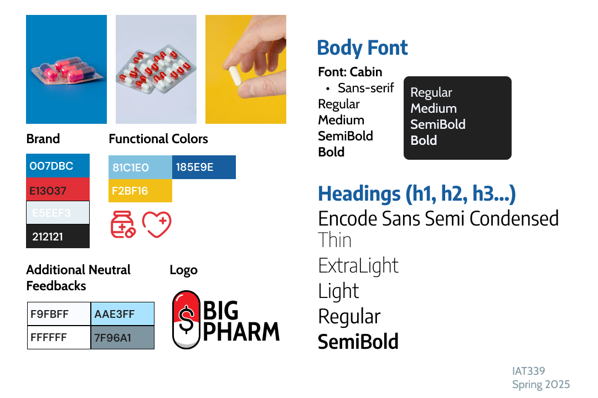
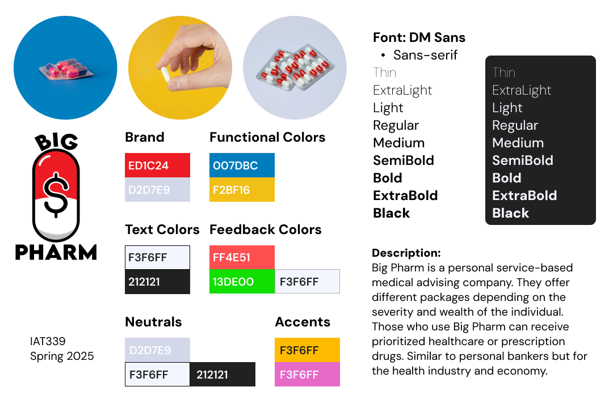
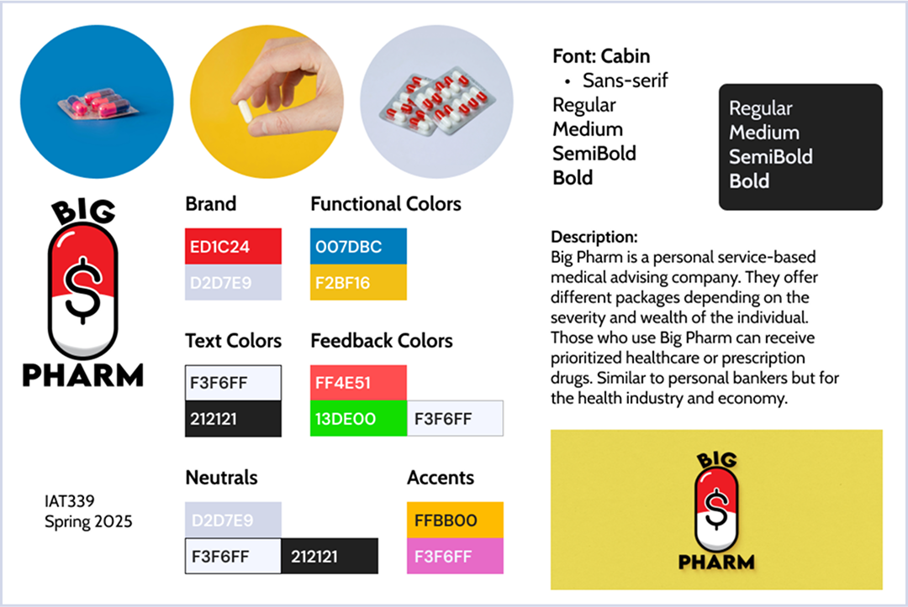

BIG PHARM chevron_right
Web Development & Branding

Process
This was a functional website and fictional brand designed for IAT 339: Web Design and Development class for the SFU Spring 2025 semester.
Big Pharm ® Care was a satirical take on life insurance companies and how they profit off life saving medicines and procedures. To obfuscate these sinister intentions, I studied official medical health websites to incorporate their language of trust into the brand as well as to highlight how powerful design can be on first impressions.
Initial Website Homepage
Iteration 1

Iteration 2

First I built the website with accessibility in mind. Standard HTML and CSS building blocks and a rough general idea of what brand aesthetic I wanted to go with in the form of a moodboard. The basic HTML was to make sure that accessibility and responsiveness was my main focus and then I could iterate off of that.
There were specific requirements in the assignment rubric to use all heading types, an ordered list element, and a commerce section of the site that allowed for checkout.
Iteration of the Style Guide
Final Iteration
Iteration 1 arrow_downward
Iteration 2 arrow_downward
After feedback and studying both BC certified health web design, like Pacific Blue Cross; Providence Health Care; and Fraser health, and also incorporating the commerce & subscription elements of sites like MalwareBytes that have a similar minimal monochromatic theme to health websites.
The general layout was adjusted to be in colored blocked out sections rather than just floating on the page. The style guide was also simplified to one central color and varying shades of blue. I incorporated a package/subscription based product display rather than a typical commerce one.
Final Website
Index

Basic Plan Information

Subscription Checkout